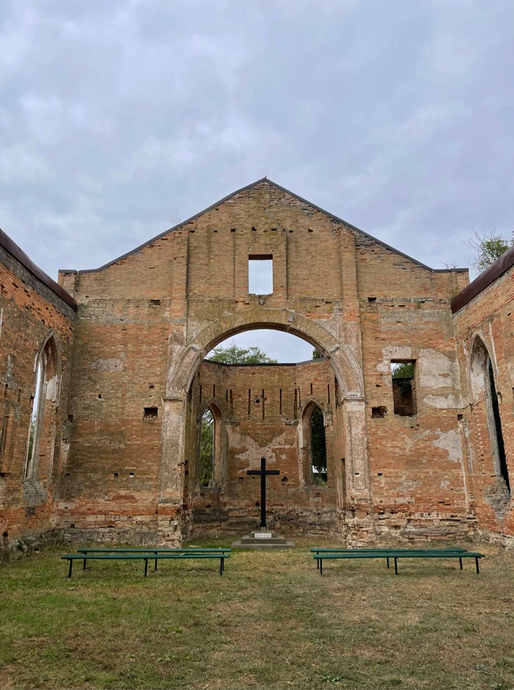

Недалеко від школи розташувалася головна пам'ятка села — Лютеранська кирха.
Вона була заснована німецькими колоністами в 1902 році. У 1903 році за участю місцевого населення церкву освятили.
З усієї округи приходили німці, росіяни, українці, молдавани і болгари, щоб бути присутніми на урочистій події.
Церковні руїни є досі там. До цього дня місцеві жителі шанують пам'ять та зберігають свою спадщину. Неймовірно атмосферне місце для відвідування.